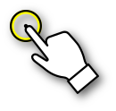

<!DOCTYPE html>
<html>
<head>
  <meta name="viewport" content="width=device-width, initial-scale=1.0, maximum-scale=1.0">
  <meta name="description" content="Touché JS Demos.">
  <meta name="keywords" content="touche, js, javascript, touch, mouse, pointer, events, gestures">
  <meta name="author" content="Manel R. Doménech">
  <link rel="stylesheet" href="css/style.css" />
</head>

<body>

  <header>
      <div class="container">
        <!-- <h1 class="title">Touché<span class="js">js</span></h1> -->
        <h1 class="title">
          <span class="logo-wrapper">
            <!-- <div class="virtualpointer"></div> -->
            
          </span>
        </h1>

        <!-- Common gestures. Virtual elements. Virtual pointers. Inertia. -->
      </div>
  </header>
  
  <div class="container">
    <div class="blocks masonry" id="examples">
    </div>
  </div>

  <footer>
    <div class="container">
      @manelio
    </div>
  </footer>

<script type="text/template" id="template-example">
  <article class="block example col {class}" id="example-{code}">
    <div class="col-in">
      <h2>{title}</h2>
      <div class="explanation {explanation-class}">{explanation}</div>
      <div class="example-body block-content">
        <div class="touchable" id="example-{code}-touchable" style="user-select: none; -webkit-touch-callout: none; -webkit-user-select: none;">
        </div>
        <div class="sandbox-wrapper" id="example-{code}-sandbox-wrapper">
          <div class="sandbox" id="example-{code}-sandbox">
          </div>
        </div>
      </div>
    </div>
    <div>
      <a class="source" href="#">show me the code</a>
    </div>
  </article>
</script>

<script src="/dist/touche.js"></script>
<script src="js/examples-util.js"></script>
<script src="js/examples.js"></script>
<script>
touche.examples = []
</script>


<script src="js/tap.js"></script>
<script src="js/tap-doubletap.js"></script>
<script src="js/ntap.js"></script>
<script src="js/swipe.js"></script>
<script src="js/press.js"></script>
<script src="js/pan.js"></script>
<script src="js/virtualpointer.js"></script>
<script src="js/pinch-vp.js"></script>
<script src="js/rotate-vp.js"></script>
<script src="js/transform.js"></script>

<script>
  document.addEventListener('DOMContentLoaded', function() {
    touche.examples.forEach(function(example) {
      var el = Example(example.title, example);
      example.go(el)
    })
  })
</script>


</body>
</html>